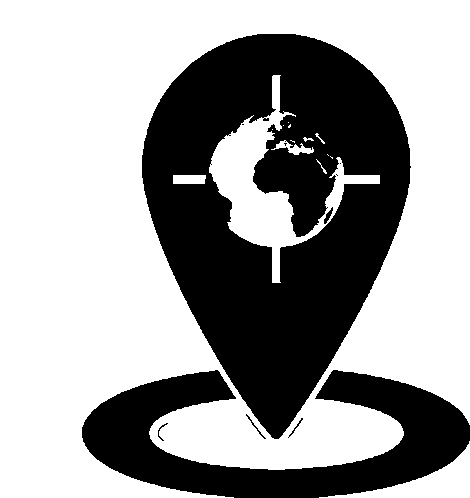

ANALISE EM TEMPO REAL
ASSISTA O VIDEO ENQUANTO
o número é rastreado e as conversas são processadas
0%
Iniciando análise...

Rastreando Dispositivo
mensagens suspeitas (incluindo as apagadas)
mensagens apagadas no celular contendo algum conteudo sexual nos últimos dias
Fotos Suspeitas
Imagens identificadas com conteúdos de nudes
Localizações Suspeitas
Localizações como motel, casa de massagem e pontos de prostituição